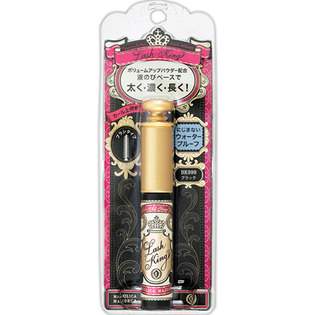

返回列表
产品名称：マジョリカ マジョルカ ラッシュキング ブラック

資生堂 マジョリカ マジョルカ ラッシュキング ブラック ＢＫ９９９
メーカー 資生堂
JANコード 4901872155514
商品の特徴
ボリュームアップパウダー配合
液のびベースで太く・濃く・長く！
にじまないウォータープルーフ
カール上向き
ブラシタイプ
成分・分量
-
用法及び用量
＜使用方法＞
●ブラシを容器の中で2～3回まわし、液を十分に絡ませてください。
●ブラシを左右にジグザグに動かし、まつ毛の根もとから押し上げるように毛先までつけます。
●落とすときは、油性のアイメーキャップリムーバーをお使い下さい。その際、無理にこすらず、よくなじませてからやさしくふきとってください。